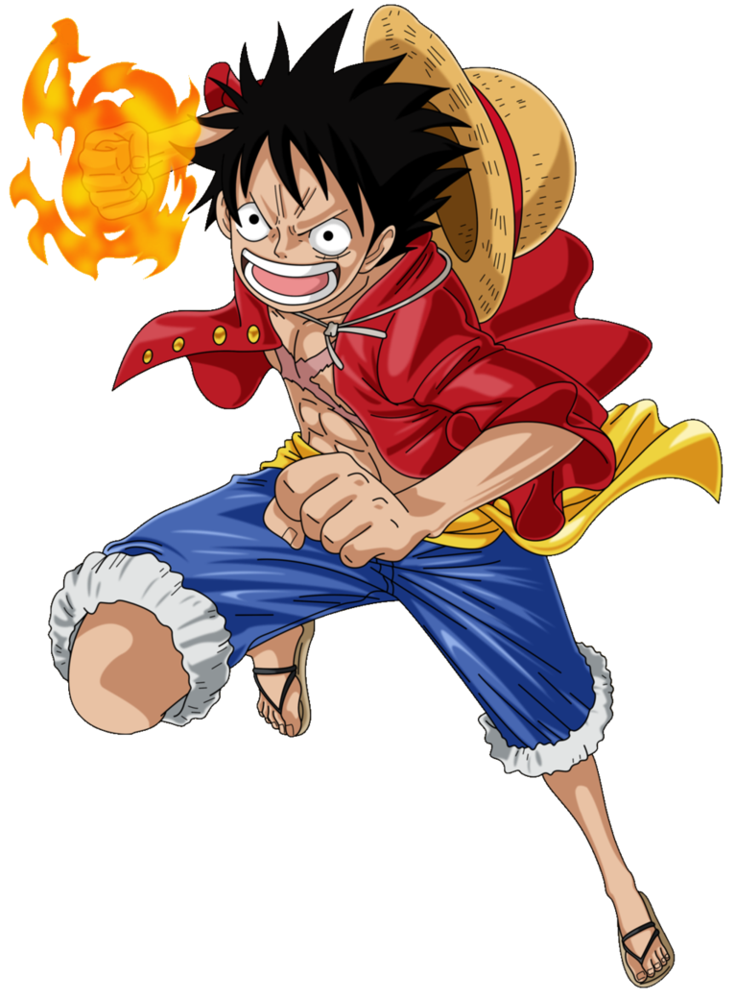
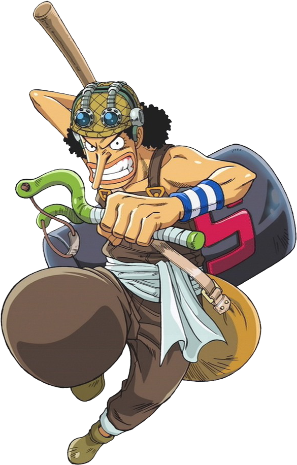
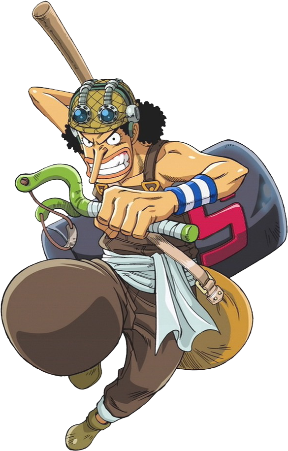
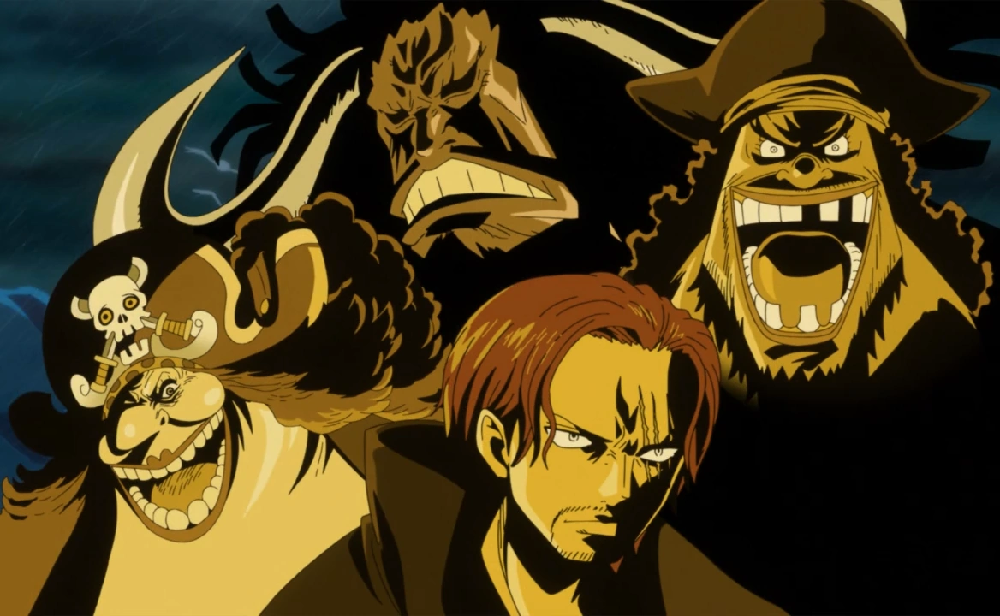

Monkey D. Luffy in his village meets the band of Redhead Pirates, being their captain Shanks.
In this encounter, Luffy eats the Rubber Fruit (Akuma no Mi) that Shanks took.
Shanks is the pirate who motivates Luffy on his adventure, he gives the boy his straw hat
With his determination to be the Pirate King, he sets out in search of his crew.

Opening En
Straw-hats

 

_(Original)_V2.webp)

Zoro
Nami
Usopp
Sanji
Chopper
Robin
Franky
Brook
Enemies:
World Govt
The World Government is a global regime which has ruled the world for over 800 years since founded by an alliance of 20 different kingdoms. It has since vastly grown in influence and now spans across more than 170 of the world's civilized countries.
Marine

The Marines are the World Government's military sea force, tasked with law enforcement, international security, and military operations. They are present in all the seas around the world, as evidenced by their branch offices. However, the main focus of their assets is on the far more dangerous Grand Line. The Marines are one of the Three Great Powers in the world, alongside the Four Emperors and the Seven Warlords of the Sea.
Younkou

The Four Emperors are the four most notorious and most powerful pirate captains in the world. They are not allies nor are they strictly enemies of each other. Instead, the four prefer to remain autonomous under most circumstances.
These four individually reside in the second half of the Grand Line (known as the New World), exerting impressive influence and control over dozens of other pirate crews and autonomous islands. They form one of the Three Great Powers.
Shichibukai

The Shichibukai ("Seven Sea Lords of Royalty") were seven powerful and notorious pirates who allied themselves with the World Government.